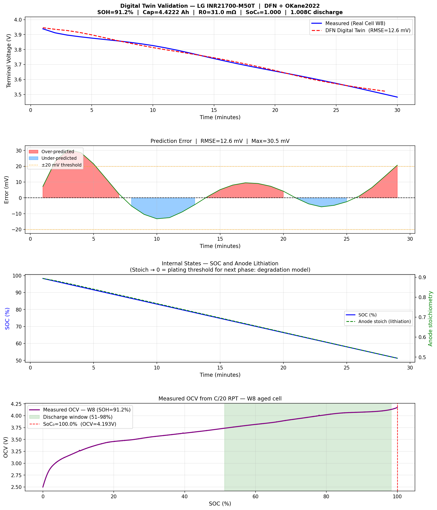
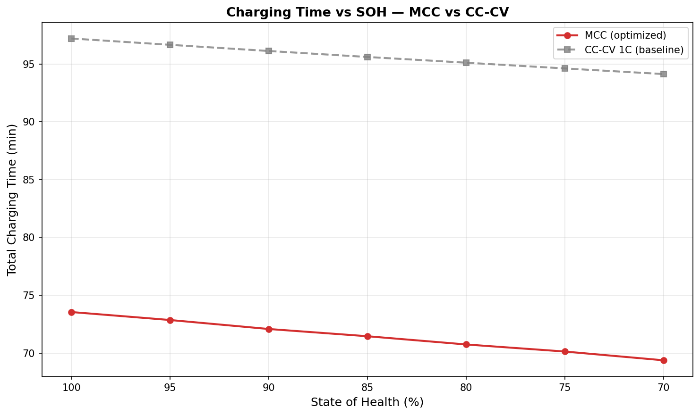

Optimizing MCC Fast Charging Currents
A project journey exploring battery fast charging through modeling, simulation, and a deeper investigation of electrochemical behavior.
Why I started
Electric vehicles are only as good as how fast they charge — but pushing current in too fast, especially on an aged battery, can cause lithium plating: a failure mode where lithium builds up on the electrode instead of absorbing into it, permanently damaging the cell. I wanted to answer a simple question: for a worn-out battery, what's the fastest safe way to charge it, and does that answer change as the battery keeps aging?
What was I trying to understand?
Instead of one constant current, multi-stage constant current (MCC) charging steps down through several current levels as the battery fills up — faster than a simple charger, if tuned right. But as a battery ages, its resistance rises and its capacity drops, changing what's actually safe. I wanted to simulate an aged cell and find the best 4-stage charging schedule — fast, but never crossing into plating risk — and see how that ideal schedule shifts with age.
What I needed to learn first
- How lithium-ion batteries actually behave internally, and why fast charging risks plating.
- PyBaMM, a Python library for full physics-based battery simulation, and the DFN (Doyle-Fuller-Newman) model it uses — a detailed model that tracks what's happening inside both electrodes, not just at the terminals.
- How to correctly detect "plating risk" from simulation output — harder than expected, since the obvious variables turned out to be measuring the wrong thing.
- Differential evolution, an optimization method good at searching messy, non-smooth simulation landscapes.
- How to read real lab battery-aging test data (RPTs) to get real capacity/resistance numbers at different points in a battery's life.
How I approached it
I used PyBaMM's DFN model with a real, published parameter set for the actual battery cell, fed with real lab-measured capacity and resistance data. I structured charging as 4 constant-current stages that step down over time, with a built-in safety rule: continuously check the anode's electrical potential and never let it approach the plating threshold.
I then ran an optimization algorithm to find the fastest 4 currents that never break that rule. I repeated this across different battery ages to see how the optimal charging plan shifts as the cell ages.
How the project evolved
Most of the real work was debugging, not tuning:
- The optimizer kept failing immediately. Traced this to the simulation silently skipping charging stages when voltage spiked too fast — common in aged, high-resistance cells. Fixed by changing how stage transitions are triggered.
- The plating-safety check was wrong — twice. First it always flagged danger, even during normal charging. Then a second attempt always looked safe, no matter the current, because it was reading a value that doesn't actually respond to current. Found the correct signal and verified it by manually testing different currents and confirming it moved the way real physics predicts.
- Runs were painfully slow (30–40 min each). Sped up by loosening simulation precision during search and only using full precision for the final answer.
- Real data only covered a tiny sliver of aging (~3% health decline). Not enough to see a trend. Extended it using real measurements anchored to a published aging trend, keeping "measured" and "estimated" clearly separate.
- A surprising result held up under scrutiny. Charging time barely changed even though resistance nearly doubled — instead of assuming a bug, I did the math by hand and found a real cancellation effect: capacity shrinks with age at nearly the same rate the safe current does.
- Pushed one step further. Letting the optimizer also choose when to switch stages, not just the currents, recovered extra speed.
- Validated the key results twice. Reran with a much larger search budget to confirm they weren't a fluke of a quick search.
What I found


- The optimized schedule charged ~24–26% faster than a standard method, at every battery age tested, while staying safely clear of plating risk.
- Surprising finding: total charging time barely changed with age (only ~5–6% difference from fresh to heavily aged), despite resistance nearly doubling — because shrinking capacity and shrinking safe current largely cancel out.
- Letting the optimizer also pick stage-switch timing recovered a further 3–5% speed improvement.
- Testing on the real (narrow-range) lab data alone showed almost no trend — confirming the real dataset simply didn't span enough aging to reveal one, which is exactly why the wider estimated range was needed.
The biggest takeaways
- A plausible-looking simulation variable isn't automatically the right one — verify it actually responds the way real physics predicts before trusting it.
- A broken-looking optimizer result usually means the simulation is wrong, not the optimizer — chasing the real cause paid off more than tuning settings.
- A surprising result deserves a hand-verified explanation, not a shrug — the "time barely changed" finding turned out to be real, explainable physics.
- Next time, get a wider spread of real lab data upfront, rather than discovering mid-project that it only covers a narrow slice of aging.